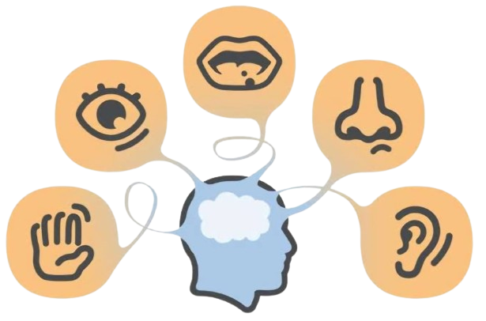
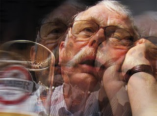

A percepção é definida como as nossas experiências sensoriais do mundo que é como ouvimos, olhamos, tocamos, degustamos e sentimos os cheiros das coisas externas. É por meio dessa experiência que obtemos informações sobre o ambiente externo. A percepção depende das funções cognitivas que é usada para processar informações, como utilizar a memória para reconhecer o rosto de um amigo ou detectar um cheiro familiar. Através do processo de percepção, somos capazes de identificar e responder aos estímulos do mundo o nosso redor.
Percepção em Psicologia A American Psychological Association - APA (Associação Americana de Psicologia) define a percepção como "o processo ou resultado de tornar-se consciente de objetos, relacionamentos e eventos por meio dos sentidos, o que inclui atividades como reconhecer, observar e discriminar". A percepção é o processamento dos cinco sentidos: tato, visão, audição, olfato e paladar. Inclui também o que é conhecido como propriocepção, que é um conjunto de sentidos que nos permite detectar mudanças na posição e no movimento do corpo. Muitos estímulos nos cercam a qualquer momento. A percepção atua como um filtro que nos permite existir e interpretar o mundo sem nos deixar sobregarregados com todos os estímulos externos.
Os efeitos do álcool podem ser devastadores no organismo humano. Com uma pequena quantidade, a nossa percepção é afetada de modo que pode desencadear inúmeros gatilhos como alteração de humor, sensação de valentia, impunidade e agressividade, de modo que, as consequências negativas podem afetar, inclusive, outras pessoas ao redor causando danos à vida através de acidentes de trânsito e/ou brigas e discussões com o emprego da força física e/ou armas letais.
